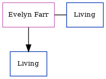

Paul Storer, the husband of Susan Ann Horne (the fourth cousin on the father's side of Nigel Horne), and married Susan in Thanet, Kent, England around Aug 19941.
Citations
England & Wales marriages 1837-2008 - Findmypast
Family Tree

Generated by ged2site. Last updated on Jun 11, 2024